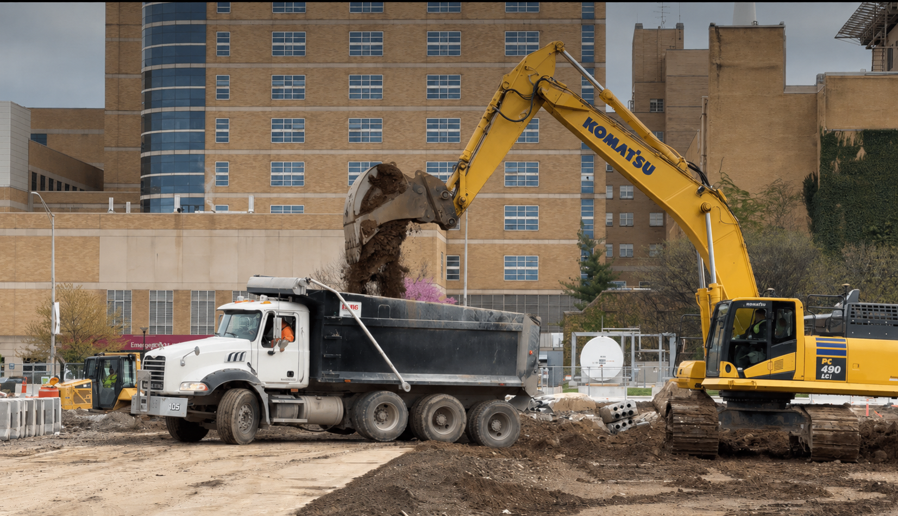

Sensing & estimation
Excavator payload estimation
Estimating bucket payload from hydraulic pressure and machine motion, with an in-cab interface for the operator.
Sep 2025 — Aug 2026
0.065 tonmean absolute error per bucket lift
across 205 lifts (R&D validation)
View project across 205 lifts (R&D validation)